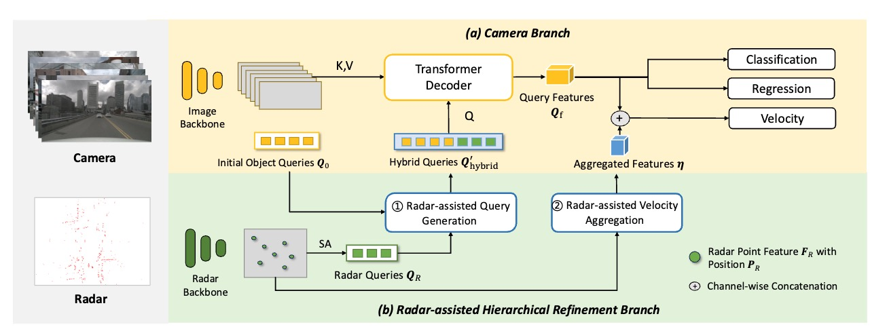

Overview
This paper introduce RaCFusion, an attribute-aware radar-camera fusion framework for 3D object detection. It should highlight the core idea of using a camera stream as the main detector and improving it with a Radar-assisted hierarchical refinement process. The description should contrast this approach with traditional symmetrical fusion methods and briefly mention the two key refinement modules: Radar-assisted Query Generation and Radar-assisted Velocity Aggregation.
